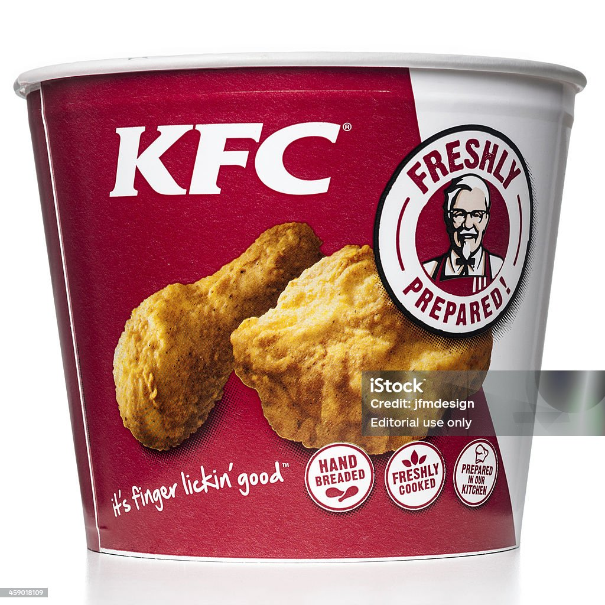
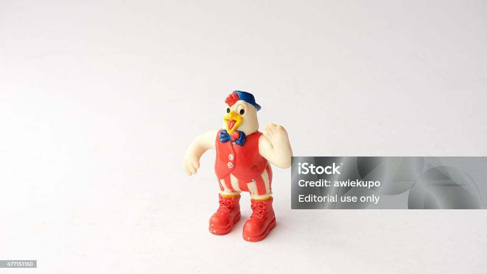

KFC (also commonly referred to by its historical name Kentucky Fried Chicken) was founded by Colonel Harland
Sanders, an entrepreneur who began selling fried chicken from his roadside restaurant in Corbin, Kentucky
during the Great Depression. Sanders identified the potential of restaurant franchising, and the first
"Kentucky Fried Chicken" franchise opened in Salt Lake City, Utah, in 1952. KFC popularized chicken in
the fast-food industry, diversifying the market by challenging the established dominance of the hamburger.
Branding himself "Colonel Sanders", the founder became a prominent figure of American cultural history, and his
image remains widely used in KFC advertising. The company's rapid expansion made it too large for Sanders to manage,
so in 1964 he sold the company to a group of investors led by John Y. Brown Jr. and Jack C. Massey.

Triple Down: A wild twist on the classic Double Down sandwich, this behemoth features three layers of crispy fried chicken as the “bun,” sandwiching bacon, cheese, and KFC’s special sauce. It’s a protein-packed indulgence for the daring.
Nashville Hot Chicken: If you crave heat, ask for your chicken to be coated in Nashville hot sauce. This fiery blend of spices will set your taste buds ablaze.
The Zinger Tower Burger: Imagine a Zinger fillet stacked with hash browns, cheese, and a hash brown bun. It’s a tower of flavor that defies convention.
The KFC Cheesy Bowl: A secret menu item that combines mashed potatoes, gravy, popcorn chicken, and cheese. It’s comfort food taken to the next level

--------THE END------